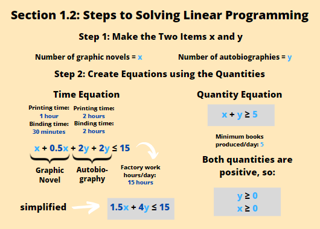
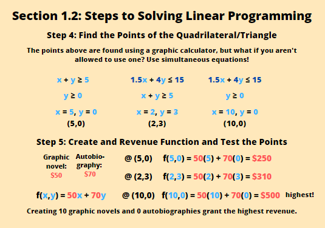

Linear programming is a branch of math that manipulates linear functions to find the desired quantity involving two different units. The concept of linear programming is often used in factories to determine the right number of output to reach a desired revenue withing a timeframe. For example, if a book factory prints two different types of books - graphic novels and autobiographies. Both types of books has to go through the printing and the binding process. Each copy of graphic novels takes 1 hour to print and 30 minutes to bind. A single copy of autobiography takes 2 hours to print and 2 hours to bind. The factory operates for 15 hours a day. If we know that in a day, a total of at least 5 books should be produced, and a single graphic novel is sold for $50, while a copy of the autobiography is sold for $70, we are tasked to find the suitable number of each type of book to be produced so that the factory's revenue is maximized. We are going to learn how to solve this type of question step by step in the next section below.
It might be confusing to see so much data given in one question, but we are only going to have two answers in the end, the number of graphic novels and the number of autobiographies that should give us the highest revenue. Below are the steps that can help you solve most questions that requires the concept of linear programming, and the image below should help you further.
1. Make the two items equal to x and y.
For the question introduced in Section 1.1, we are going to make the number of graphic novels = x, and the number of autobiographies = y.
2. Create linear equations using the quantities provided.
We have the time for both processes (printing and binding) for the two types of books to go through as well as the total number of books that should be produced in a day. We'll work with the time units first. So we have 1 hour to print and 30 minutes to bind a single copy of a graphic novel. That makes a total of 1.5 hours to create 1 graphic novel copy (make sure to use the same units throughout). As for the autobiographies, one copy takes 2 hours to print, and another 2 hours to bind. A total of 4 hours are required to create 1 copy. Multiplying the time needed for 1 copy of each book to be created, we have 1.5x (graphic novels) and 4y (autobiographies). The maximum time we can use is 15 hours, because that's how long the factory operates in a day. Adding the times, we have 1.5x + 4y ≤ 15 (the sign ≤ is used because you can use all 15 hours, or less than that, but not more).
Next we have the total number of books required to be produced in a day. The number of graphic novels (x) and autobiographies (y) should be 5 or more when added up. So, we have x + y ≥ 5 (because you can make exactly 5, or more than 5, but not less).
We now have the two equations we will need to plot on a graph. Also note that we need to plot y ≥ 0 and x ≥ 0 because the numbers can be 0, but can't be negative quantities.
3. Plot the equations and shade the regions
On the image on the right, the graph of the 4 equations are graphed and the region that it covers is shaded. If you see the sign ≥, you shade the area above the line, and if you see the sign ≤, you shade the area under the line. You will see that there is a common region that is shaded by all the regions. Now we'll focus on that.
4. Find the points of the quadrilateral/triangle
Most of the time, the common shaded region will take the shape of a quadrilateral (4 sided) or a triangle (3 sided). There are 4 points that make up its corners. We'll find their coordinates. To find the intersection of between two lines, you can make them equal to each other. In this case, we have the coordinates (2,3), (5,0) and (10,0).
5. Create a revenue function and test the points
We're finally going to find out which of the 3 points we found can grant us the most revenue. Each graphic novel gives us $50 and each autobiography gives us $70. We have the function f(x,y) = 50x + 70y, where we input the points we found and figure out which one holds the most value.
@(2,3), f(2,3) = 50 x 2 + 70 x 3 = $310
@(5,0), f(x,y) = 50 x 5 + 70 x 0 = $250 (lowest/min point)
@(10,0), f(x,y) = 50 x 10 + 70 x 0 = $500 (highest/max point)
The highest revenue obtained is $500 if 10 graphic novels and no autobiographies are made. It's crucial to check all the points because you can't really predict which combination of quantities would give you the most revenue.
There we have it, we've successfully applied our knowledge of linear functions and elaborated it into something useful.